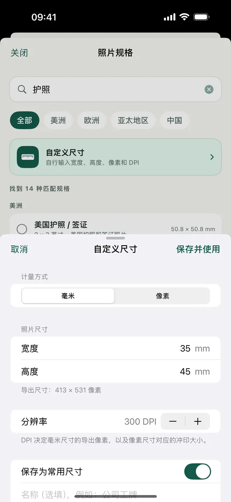

护照与证件照制作
制作适用于美国、加拿大、欧洲等地申请的护照、签证与身份证照片。选择规格、调整人像构图，导出电子照片或打印排版。
照片在本机处理 · 无需账号或上传
- 美国护照2 × 2 英寸
- 英国纸质护照35 × 45 毫米
- 加拿大护照50 × 70 毫米

护照与证件照尺寸
以下规格可以在 IDMint 中搜索。尺寸按宽 × 高列出。电子照片预设可作为制作起点，照片是否符合要求取决于申请机构的规定。
| 国家或地区 | 照片类型 | IDMint 规格 | 官方要求 |
|---|---|---|---|
| 美国 | 护照照片 | 2 × 2 英寸 | 官方指引 |
| 美国 | 签证照片 | 2 × 2 英寸 | 官方指引 |
| 加拿大 | 护照照片 | 50 × 70 毫米 | 官方指引 |
| 英国 | 纸质护照照片 | 35 × 45 毫米 | 官方指引 |
| 英国 | 在线护照照片 | 600 × 750 像素 | 官方指引 |
| 爱尔兰 | 在线护照照片 | 715 × 951 像素 | 官方指引 |
| 法国 | 护照及身份证照片 | 35 × 45 毫米 | 官方指引 |
| 荷兰 | 护照、身份证及驾照照片 | 35 × 45 毫米 | 官方指引 |
| 奥地利 | 护照、身份证及驾照照片 | 35 × 45 毫米 | 官方指引 |
| 比利时 | 护照及儿童身份证照片 | 35 × 45 毫米 | 官方指引 |
| 意大利 | 护照及身份证照片 | 35 × 45 毫米 | 官方指引 |
| 西班牙 | 护照及 DNI 身份证照片 | 26 × 32 毫米 | 官方指引 |
| 波兰 | 护照及身份证照片 | 35 × 45 毫米 | 官方指引 |
| 申根区 | 短期签证照片 | 35 × 45 毫米 | 官方指引 |
部分机构要求由专业摄影师拍摄，或禁止更换背景等数字修改。使用自拍或编辑过的照片前，请先查看本次申请的最新规定。
从人像照片到打印排版
选择照片规格
按国家、证件类型或尺寸搜索。也可以按毫米或像素输入自定义尺寸和 DPI，并保存规格备用。
调整人像构图
从相册导入或拍摄一张照片。用裁剪参考线和缩放工具调整构图，在本机检查姿态和照片质量。
导出电子照或排版
保存 JPEG 或 PNG，可为 JPEG 设置目标文件大小，也可将多张照片排在一张 4 × 6 英寸纸上并添加裁切线。

常见问题
美国护照照片是几寸？
IDMint 中的美国护照照片参考为 2 × 2 英寸，约 51 × 51 毫米，300 DPI 下为 600 × 600 像素。在线申请请另外核对上传要求。
英国纸质和在线护照照片的尺寸一样吗？
纸质照片为 35 × 45 毫米。英国在线护照申请要求至少 600 像素宽、750 像素高。IDMint 分别提供了两个参考规格。
加拿大护照照片可以自拍吗？
加拿大通常要求本人到商业摄影师或照相馆拍摄。请按官方申请指引准备，IDMint 的规格仅供了解所需尺寸。
IDMint 可以制作护照、签证或身份证吗？
IDMint 仅用于制作申请时可能用到的人像照片。证件由有关机构签发，照片也由该机构审核。
IDMint 会上传我的照片吗？
裁剪、照片检查和导出都在 iPhone 上运行。使用 IDMint 无需注册账号，照片不会上传到开发者服务器。
开始准备你的证件照
导出照片需要月度订阅或一次性购买。中国大陆 App Store 暂未提供。